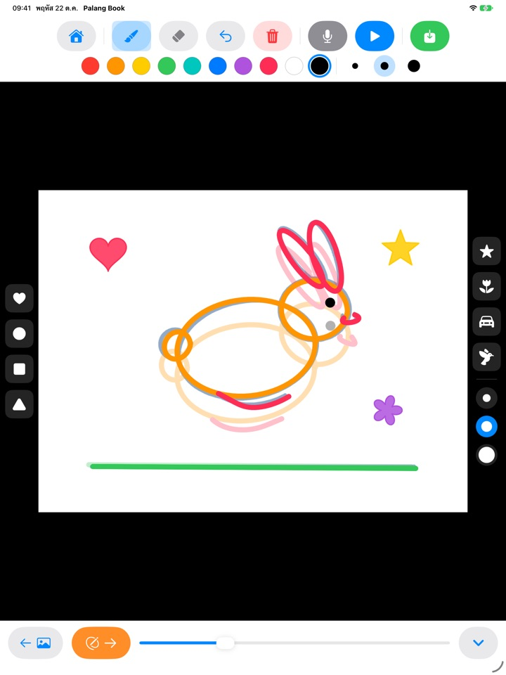
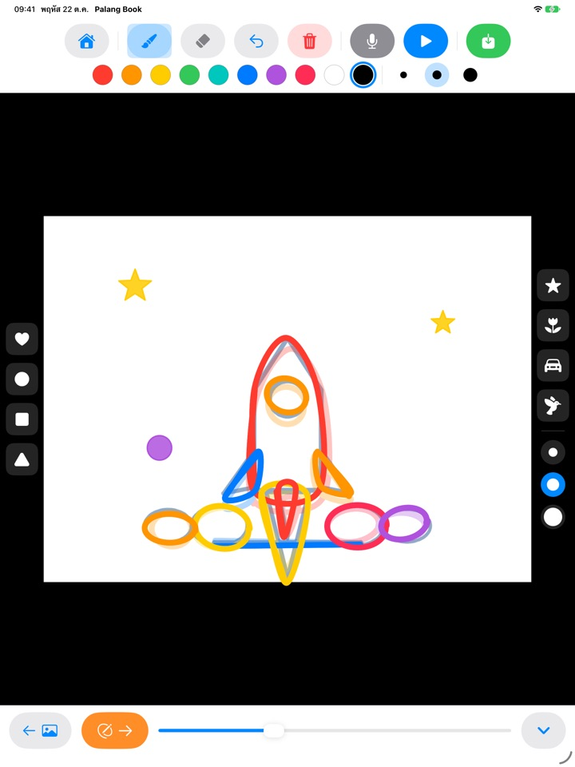
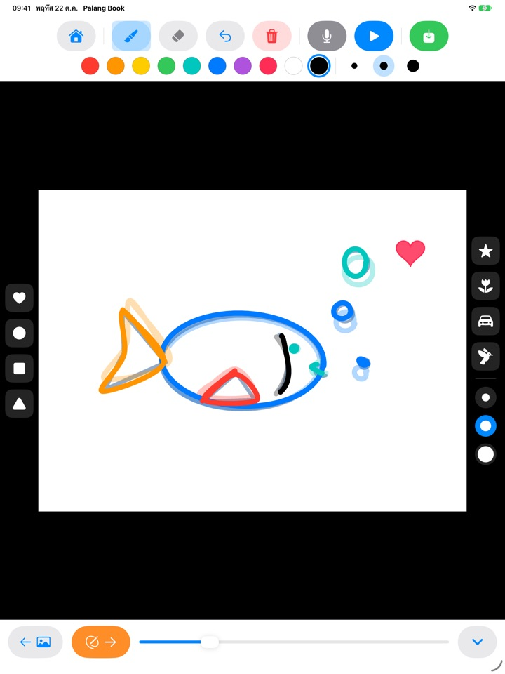
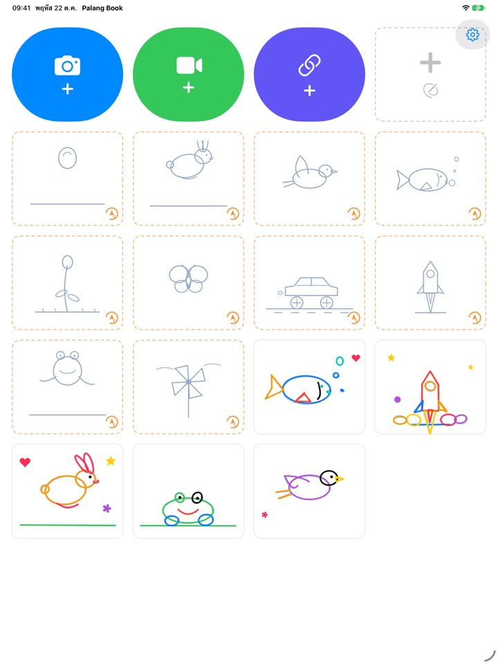

วาดตามเส้น
แล้วดูภาพขยับ
ลูกวาดตามเส้นนำจางๆ ทีละหน้า กดเล่นแล้วเส้นนำจะหายไป เหลือแต่เส้นที่ลูกวาดเองขยับไปมา ปุ่มทุกปุ่มเป็นรูปภาพ ลูกจึงเล่นเองได้แม้ยังอ่านไม่ออก
สำหรับ iPad ชุดวาดตามเส้น 3 ชุดใช้ได้ฟรี

ลองวาดดูสักสองสามหน้า
วาดอะไรก็ได้ แล้วแตะลูกศรสีส้มเพื่อไปหน้าถัดไป หน้าก่อนหน้าจะจางๆ ให้เห็น วาดสักสองสามหน้าแล้วแตะปุ่มเล่นสีน้ำเงิน
ภาพสวยๆ แบบนี้ ปล่อยให้นิ่งอยู่ก็น่าเสียดายนะ
แอนิเมชันต้องวาดภาพที่เกือบเหมือนเดิมซ้ำหลายๆ หน้า โดยขยับทีละนิด เด็กๆ จึงไม่รู้จะเริ่มตรงไหน Palang Book วางเส้นนำจางๆ ที่มีท่าทางการเคลื่อนไหวไว้ให้แล้ว ลูกแค่วาดตามเส้นไป พอกดเล่น ภาพของลูกก็ขยับทันที
วาดตามเส้น ก็ได้แอนิเมชัน
ลูกบอลเด้งดึ๋ง กระต่ายกระโดด นกบิน ปลาว่ายน้ำ ดอกไม้บาน ผีเสื้อ รถแข่ง จรวด กบ และกังหันลม แต่ละชุดมีเส้นนำประมาณ 20 หน้า
หน้าก่อนหน้าจะจางๆ ให้เห็นเพื่อให้วาดหน้าถัดไปได้ง่าย และเมื่อเล่น เส้นนำจะหายไป เหลือแต่ภาพของลูกที่ขยับ

ตราประทับและสี 10 สี
แตะประทับรูปหัวใจ วงกลม สี่เหลี่ยม สามเหลี่ยม ดาว ดอกไม้ รถ และนกได้เลย ตราประทับและพู่กันมีอย่างละ 3 ขนาด พร้อมสีให้เลือก 10 สี
มียางลบและปุ่มเลิกทำ วาดผิดก็แก้ได้ง่าย วาดด้วยนิ้วหรือ Apple Pencil ก็ได้

วาดทับวิดีโอของคุณ หรือบนกระดาษเปล่า
นำเข้าวิดีโอที่ถ่ายเองหรือวิดีโอจากแอปรูปภาพ แล้ววาดตามทับลงไปได้เลย เมื่อซ่อนพื้นหลัง จะเล่นเฉพาะฉากที่วาดไว้ต่อกันบนกระดาษขาว และยังมีฟลิปบุ๊กเปล่าที่ไม่มีเส้นนำเลยด้วย
แตะไมโครโฟนเพื่ออัดเสียงลูกไปพร้อมกัน แล้วบันทึกผลงานเป็นวิดีโอลงในรูปภาพ เพื่อส่งให้คนในครอบครัวดู

เริ่มได้ใน 3 ขั้นตอน
- 1
แตะการ์ดเส้นนำ
การ์ดขอบประสีส้มบนหน้าหลักคือชุดวาดตามเส้น
- 2
วาดแล้วพลิกหน้า
ลูกศรสีส้มพาไปหน้าถัดไป
- 3
กดเล่น
แตะปุ่มเล่นสีน้ำเงิน แล้วภาพจะขยับ
ปุ่มแต่ละปุ่มทำอะไร
- การ์ดขอบประสีส้ม
- เริ่มวาดตามเส้น
- การ์ดขอบประสีเทา
- ฟลิปบุ๊กเปล่า
- กล้องสีน้ำเงิน
- วาดทับวิดีโอที่ถ่ายเอง
- วิดีโอสีเขียว
- นำเข้าวิดีโอจากแอปรูปภาพ
- ลิงก์สีคราม
- วางลิงก์ไปยังไฟล์วิดีโอ
- ลูกศรสีส้ม
- หน้าถัดไป
- ปุ่มเล่นสีน้ำเงิน
- เล่นแอนิเมชัน แตะอีกครั้งเพื่อหยุด
- ลูกศรโค้ง
- เลิกทำเส้นล่าสุด
- ถังขยะสีแดง
- ล้างทั้งหน้า (กดเลิกทำเพื่อเอากลับมาได้)
- ไมโครโฟน
- อัดเสียงระหว่างที่แอนิเมชันเล่นวน
- ไอคอนวิดีโอ
- ซ่อนพื้นหลังวิดีโอ (ลายขีดสีชมพูคือแสดงแค่ภาพวาด)
- ปุ่มบันทึกสีเขียว
- บันทึกเป็นวิดีโอลงในรูปภาพ
ถ้าจะลบผลงาน ให้แตะการ์ดของผลงานนั้นบนหน้าหลักค้างไว้ ภาพวาด เสียงที่อัด และวิดีโอที่นำเข้าจะถูกลบไปด้วย
ลองฟรีได้เยอะ ถ้าชอบก็มีสิทธิ์ใช้งานตลอดชีพ
ฟรี
- ชุดวาดตามเส้น 3 ชุด (ลูกบอล กระต่าย ดอกไม้)
- เก็บผลงานได้ 3 ชิ้น
- นำเข้าวิดีโอได้ 1 รายการ
- ฟลิปบุ๊กเปล่าได้สูงสุด 10 หน้า
- บันทึกเสียงได้สูงสุด 15 วินาที
- ตราประทับ สี พู่กัน และบันทึกลงรูปภาพ
สิทธิ์ใช้งานตลอดชีพ
- ชุดวาดตามเส้นทุกชุด รวมถึงชุดใหม่ในอนาคต
- ไม่จำกัดผลงาน จำนวนหน้า วิดีโอ และเวลาบันทึกเสียง
- ไม่มีการ์ด Palang Book ท้ายวิดีโอที่บันทึก
จ่ายครั้งเดียว ไม่ใช่การสมัครสมาชิก ใช้กับการแชร์กับครอบครัวได้บน iPad ทุกเครื่องในบ้าน
วิดีโอที่บันทึกในเวอร์ชันฟรีจะมีการ์ด Palang Book สั้นๆ ต่อท้าย ถ้าคุณใช้ Palang Book มาก่อนที่จะมีสิทธิ์ใช้งานตลอดชีพ ทุกอย่างจะปลดล็อกไว้ให้แล้ว
คำถามที่พบบ่อย
เส้นนำใช้งานอย่างไร
เส้นสีฟ้าอ่อนคือเส้นนำ ลูกวาดทับตามเส้นนั้น และเมื่อกดเล่น เส้นนำจะหายไป เหลือแต่เส้นของลูกที่ขยับ วาดครบประมาณ 20 หน้าก็ได้แอนิเมชันแล้ว
อยากเล่นและบันทึกเฉพาะภาพวาด ไม่เอาวิดีโอ
ในผลงานที่มีวิดีโอ ให้แตะไอคอนวิดีโอที่แถบเครื่องมือด้านบนจนเป็นลายขีดสีชมพู จากนั้นทั้งการเล่นและการบันทึกจะแสดงแค่ภาพวาดบนพื้นขาว และจะเล่นเฉพาะฉากที่วาดไว้ วาดไม่กี่หน้าบนวิดีโอยาวๆ ก็ได้แอนิเมชันสั้นๆ
วิดีโอที่เสร็จแล้วไปอยู่ที่ไหน
แตะปุ่มบันทึกสีเขียวที่ขวาสุดของแถบเครื่องมือ วิดีโอ mp4 จะถูกบันทึกลงในรูปภาพ ครั้งแรกที่บันทึก โปรดอนุญาตการเข้าถึงรูปภาพ
ใส่เสียงได้อย่างไร
แตะปุ่มไมโครโฟนเพื่ออัดเสียงระหว่างที่แอนิเมชันเล่นวน แล้วแตะหยุดเมื่ออัดเสร็จ ถ้าอัดใหม่ เสียงเดิมจะถูกแทนที่ เสียงจะรวมอยู่ในวิดีโอเมื่อบันทึก
เปิดลิงก์วิดีโอไม่ได้
ตรวจสอบการเชื่อมต่ออินเทอร์เน็ต และดูว่าลิงก์ชี้ไปที่ไฟล์วิดีโอโดยตรง (ลงท้ายด้วย .mp4 หรือคล้ายกัน) ลิงก์หน้าเว็บของเว็บไซต์แชร์วิดีโอจะเปิดไม่ได้ โปรดใช้วิดีโอที่ถ่ายเองหรือวิดีโอที่ใช้ได้อย่างอิสระ
ฝ่ามือไปโดนจอแล้วเกิดรอย
ลูกศรโค้งจะลบเส้นล่าสุด ส่วนถังขยะสีแดงจะล้างทั้งหน้า (กดเลิกทำเพื่อเอากลับมาได้) ถ้าเกิดบ่อย ส่งอีเมลหาเรา เรายินดีช่วย
ทำไมมีโจทย์เลขก่อนเข้าหน้าจอการซื้อ
เพื่อไม่ให้เด็กเข้าไปที่หน้าจอการซื้อเองได้ เมื่อลูกแตะสิ่งที่ล็อกอยู่ จะเห็นแม่กุญแจใหญ่และข้อความ “ให้ผู้ใหญ่ดูหน่อยนะ” หน้าจอการซื้อจะเปิดได้ก็ต่อเมื่อผู้ใหญ่ตอบโจทย์การคูณ
จะกู้คืนการซื้อได้อย่างไร
แตะเฟืองที่มุมขวาบนของหน้าหลัก เลือกสิทธิ์ใช้งานตลอดชีพ ตอบคำถามสำหรับผู้ใหญ่ แล้วแตะกู้คืนการซื้อ ต้องลงชื่อเข้าใช้ด้วยบัญชี Apple เดียวกับที่ใช้ซื้อ
จะส่งความคิดเห็นจากในแอปได้อย่างไร
แตะเฟืองบนหน้าหลักแล้วเลือกส่งความคิดเห็น แนบภาพหน้าจอได้ และใส่ชื่อกับอีเมลไว้ถ้าต้องการให้ตอบกลับ เราขอให้ผู้ปกครองเป็นผู้ส่ง
แอปเก็บข้อมูลของลูกไหม
ไม่เก็บเลย Palang Book ไม่เก็บข้อมูลส่วนบุคคลใดๆ ภาพวาดและเสียงที่อัดจะอยู่ใน iPad ของคุณเท่านั้น ดูรายละเอียดได้ในนโยบายความเป็นส่วนตัว
มีคำถามหรือปัญหา ส่งอีเมลมาที่ mizzking75@gmail.com โดยปกติเราจะตอบกลับภายใน 2 ถึง 3 วัน